45个小技巧优化代码
本文我就从代码的编写规范，格式的优化，设计原则和一些常见的代码优化的技巧等方面总结了了45个小技巧分享给大家，如果不足，欢迎指正。
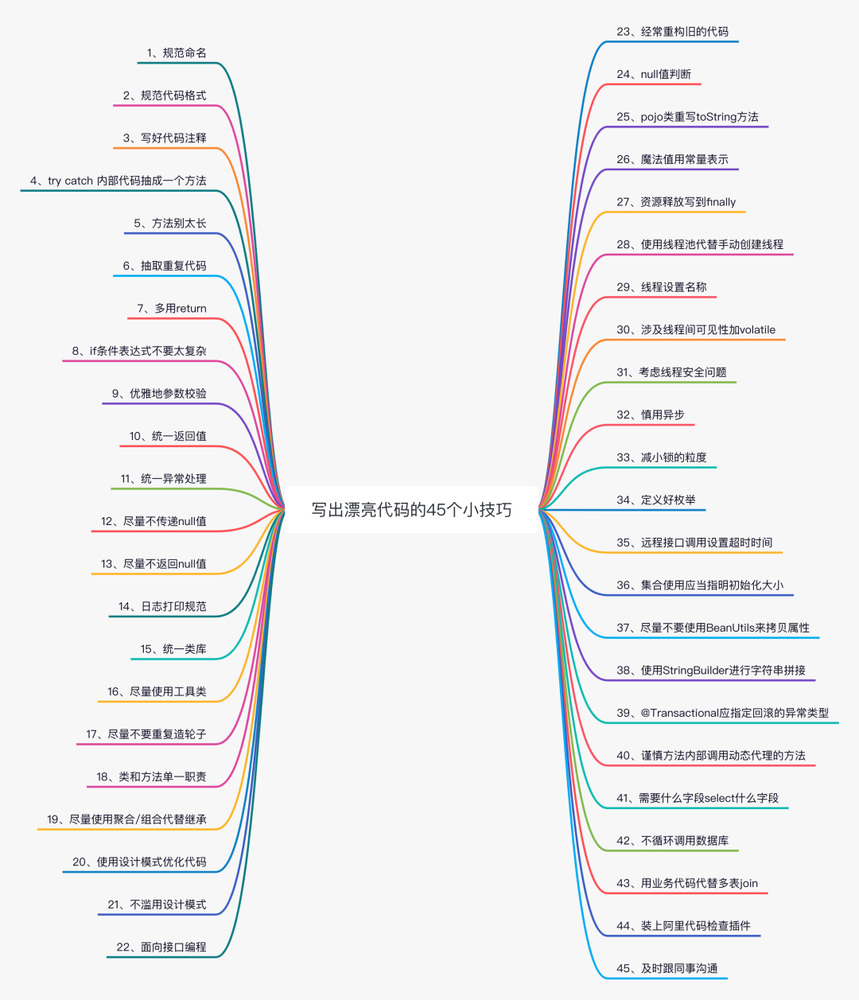
1、规范命名¶
命名是写代码中最频繁的操作，比如类、属性、方法、参数等。好的名字应当能遵循以下几点：
见名知意¶
比如需要定义一个变量需要来计数
名称 i 没有任何的实际意义，没有体现出数量的意思，所以我们应当指明数量的名称能够读的出来¶
如下代码：
这些变量的名称，根本读不出来，更别说实际意义了。
所以我们可以使用正确的可以读出来的英文来命名
2、规范代码格式¶
好的代码格式能够让人感觉看起来代码更加舒适。
好的代码格式应当遵守以下几点：
- 合适的空格
- 代码对齐，比如大括号要对齐
- 及时换行，一行不要写太多代码
好在现在开发工具支持一键格式化，可以帮助美化代码格式。
3、写好代码注释¶
在《代码简洁之道》这本书中作者提到了一个观点，注释的恰当用法是用来弥补我们在用代码表达意图时的失败。换句话说，当无法通过读代码来了解代码所表达的意思的时候，就需要用注释来说明。
作者之所以这么说，是因为作者觉得随着时间的推移，代码可能会变动，如果不及时更新注释，那么注释就容易产生误导，偏离代码的实际意义。而不及时更新注释的原因是，程序员不喜欢写注释。（作者很懂啊）
但是这不意味着可以不写注释，当通过代码如果无法表达意思的时候，就需要注释，比如如下代码
为什么 id == 0 需要跳过，代码是无法看出来了，就需要注释了。
好的注释应当满足一下几点：
-
解释代码的意图，说明为什么这么写，用来做什么
-
对参数和返回值注释，入参代表什么，出参代表什么
-
有警示作用，比如说入参不能为空，或者代码是不是有坑
-
当代码还未完成时可以使用 todo 注释来注释
4、try catch 内部代码抽成一个方法¶
try catch代码有时会干扰我们阅读核心的代码逻辑，这时就可以把try catch内部主逻辑抽离成一个单独的方法
如下图是Eureka服务端源码中服务下线的实现中的一段代码
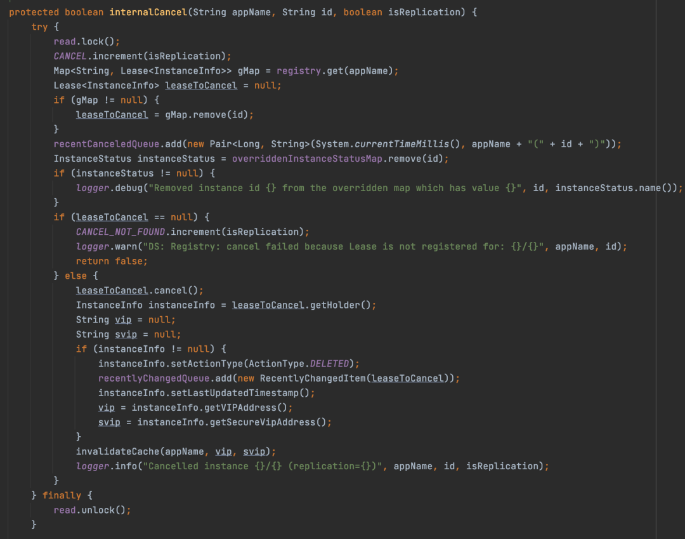
整个方法非常长，try中代码是真正的服务下线的代码实现，finally可以保证读锁最终一定可以释放。
所以这段代码其实就可以对核心的逻辑进行抽取。
protected boolean internalCancel(String appName, String id, boolean isReplication) {
try {
read.lock();
doInternalCancel(appName, id, isReplication);
}
finally {
read.unlock();
}
// 剩余代码
}
private boolean doInternalCancel(String appName, String id, boolean isReplication) {
//真正处理下线的逻辑
}
5、方法别太长¶
方法别太长就是字面的意思。一旦代码太长，给人的第一眼感觉就很复杂，让人不想读下去；同时方法太长的代码可能读起来容易让人摸不着头脑，不知道哪一些代码是同一个业务的功能。
我曾经就遇到过一个方法写了2000+行，各种if else判断，我光理清代码思路就用了很久，最终理清之后，就用策略模式给重构了。
所以一旦方法过长，可以尝试将相同业务功能的代码单独抽取一个方法，最后在主方法中调用即可。
6、抽取重复代码¶
当一份代码重复出现在程序的多处地方，就会造成程序又臭又长，当这份代码的结构要修改时，每一处出现这份代码的地方都得修改，导致程序的扩展性很差。
所以一般遇到这种情况，可以抽取成一个工具类，还可以抽成一个公共的父类。
7、多用return¶
在有时我们平时写代码的情况可能会出现if条件套if的情况，当if条件过多的时候可能会出现如下情况：
面对这种情况，可以换种思路，使用return来优化
if (!条件1) {
return;
}
if (!条件2) {
return;
}
if (!条件3) {
return;
}
if (!条件4) {
return;
}
if (!条件5) {
return;
}
System.out.println("三友的java日记");
这样优化就感觉看起来更加直观
8、if条件表达式不要太复杂¶
比如在如下代码：
if (((StringUtils.isBlank(person.getName())
|| "三友的java日记".equals(person.getName()))
&& (person.getAge() != null && person.getAge() > 10))
&& "汉".equals(person.getNational())) {
// 处理逻辑
}
这段逻辑，这种条件表达式乍一看不知道是什么，仔细一看还是不知道是什么，这时就可以这么优化
boolean sanyouOrBlank = StringUtils.isBlank(person.getName()) || "三友的java日记".equals(person.getName());
boolean ageGreaterThanTen = person.getAge() != null && person.getAge() > 10;
boolean isHanNational = "汉".equals(person.getNational());
if (sanyouOrBlank
&& ageGreaterThanTen
&& isHanNational) {
// 处理逻辑
}
此时就很容易看懂if的逻辑了
9、优雅地参数校验¶
当前端传递给后端参数的时候，通常需要对参数进场检验，一般可能会这么写
@PostMapping
public void addPerson(@RequestBody AddPersonRequest addPersonRequest) {
if (StringUtils.isBlank(addPersonRequest.getName())) {
throw new BizException("人员姓名不能为空");
}
if (StringUtils.isBlank(addPersonRequest.getIdCardNo())) {
throw new BizException("身份证号不能为空");
}
// 处理新增逻辑
}
这种写虽然可以，但是当字段的多的时候，光校验就占据了很长的代码，不够优雅。
针对参数校验这个问题，有第三方库已经封装好了，比如hibernate-validator框架，只需要拿来用即可。
所以就在实体类上加@NotBlank、@NotNull注解来进行校验
@Data
@ToString
private class AddPersonRequest {
@NotBlank(message = "人员姓名不能为空")
private String name;
@NotBlank(message = "身份证号不能为空")
private String idCardNo;
//忽略
}
此时Controller接口就需要方法上就需要加上@Valid注解
@PostMapping
public void addPerson(@RequestBody @Valid AddPersonRequest addPersonRequest) {
// 处理新增逻辑
}
10、统一返回值¶
后端在设计接口的时候，需要统一返回值
不仅是给前端参数，也包括提供给第三方的接口等，这样接口调用方法可以按照固定的格式解析代码，不用进行判断。如果不一样，相信我，前端半夜都一定会来找你。
Spring中很多方法可以做到统一返回值，而不用每个方法都返回，比如基于AOP，或者可以自定义HandlerMethodReturnValueHandler来实现统一返回值。
11、统一异常处理¶
当你没有统一异常处理的时候，那么所有的接口避免不了try catch操作。
@GetMapping("/{id}")
public Result<T> selectPerson(@PathVariable("id") Long personId) {
try {
PersonVO vo = personService.selectById(personId);
return Result.success(vo);
} catch (Exception e) {
//打印日志
return Result.error("系统异常");
}
}
每个接口都得这么玩，那不得满屏的try catch。
所以可以基于Spring提供的统一异常处理机制来完成。
12、尽量不传递null值¶
这个很好理解，不传null值可以避免方法不支持为null入参时产生的空指针问题。
当然为了更好的表明该方法是不是可以传null值，可以通过@NonNull和@Nullable注解来标记。@NonNull就表示不能传null值，@Nullable就是可以传null值。
//示例1
public void updatePerson(@Nullable Person person) {
if (person == null) {
return;
}
personService.updateById(person);
}
//示例2
public void updatePerson(@NonNull Person person) {
personService.updateById(person);
}
13、尽量不返回null值¶
尽量不返回null值是为了减少调用者对返回值的为null判断，如果无法避免返回null值，可以通过返回Optional来代替null值。
public Optional<Person> getPersonById(Long personId) {
return Optional.ofNullable(personService.selectById(personId));
}
如果不想这么写，也可以通过@NonNull和@Nullable表示方法会不会返回null值。
14、日志打印规范¶
好的日志打印能帮助我们快速定位问题
好的日志应该遵循以下几点：
-
可搜索性，要有明确的关键字信息
-
异常日志需要打印出堆栈信息
-
合适的日志级别，比如异常使用error，正常使用info
-
日志内容太大不打印，比如有时需要将图片转成Base64，那么这个Base64就可以不用打印
15、统一类库¶
在一个项目中，可能会由于引入的依赖不同导致引入了很多相似功能的类库，比如常见的json类库，又或者是一些常用的工具类，当遇到这种情况下，应当规范在项目中到底应该使用什么类库，而不是一会用Fastjson，一会使用Gson。
16、尽量使用工具类¶
比如在对集合判空的时候，可以这么写
但是一般不推荐这么写，可以通过一些判断的工具类来写
不仅集合，比如字符串的判断等等，就使用工具类，不要手动判断。
17、尽量不要重复造轮子¶
就拿格式化日期来来说，我们一般封装成一个工具类来调用，比如如下代码
private static final SimpleDateFormat DATE_TIME_FORMAT = new SimpleDateFormat("yyyy-MM-dd HH:mm:ss");
public static String formatDateTime(Date date) {
return DATE_TIME_FORMAT.format(date);
}
这段代码看似没啥问题，但是却忽略了SimpleDateFormat是个线程不安全的类，所以这就会引起坑。
一般对于这种已经有开源的项目并且已经做得很好的时候，比如Hutool，就可以把轮子直接拿过来用了。
18、类和方法单一职责¶
单一职责原则是设计模式的七大设计原则之一，它的核心意思就是字面的意思，一个类或者一个方法只做单一的功能。
就拿Nacos来说，在Nacos1.x的版本中，有这么一个接口HttpAgent
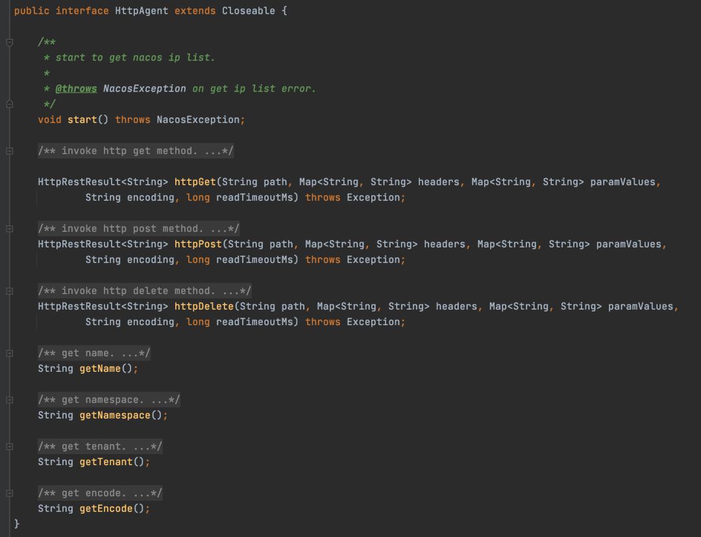
这个类只干了一件事，那就是封装http请求参数，向Nacos服务端发送请求，接收响应，这其实就是单一职责原则的体现。
当其它的地方需要向Nacos服务端发送请求时，只需要通过这个接口的实现，传入参数就可以发送请求了，而不需要关心如何携带服务端鉴权参数、http请求参数如何组装等问题。
19、尽量使用聚合/组合代替继承¶
继承的弊端：
- 灵活性低。java语言是单继承的，无法同时继承很多类，并且继承容易导致代码层次太深，不易于维护
- 耦合性高。一旦父类的代码修改，可能会影响到子类的行为
所以一般推荐使用聚合/组合代替继承。
聚合/组合的意思就是通过成员变量的方式来使用类。
比如说，OrderService需要使用UserService，可以注入一个UserService而非通过继承UserService。
聚合和组合的区别就是，组合是当对象一创建的时候，就直接给属性赋值，而聚合的方式可以通过set方式来设置。
组合：
聚合：
public class OrderService {
private UserService userService;
public void setUserService(UserService userService) {
this.userService = userService;
}
}
20、使用设计模式优化代码¶
在平时开发中，使用设计模式可以增加代码的扩展性。
比如说，当你需要做一个可以根据不同的平台做不同消息推送的功能时，就可以使用策略模式的方式来优化。
设计一个接口：
public interface MessageNotifier {
/**
* 是否支持改类型的通知的方式
*
* @param type 0:短信 1:app
* @return
*/
boolean support(int type);
/**
* 通知
*
* @param user
* @param content
*/
void notify(User user, String content);
}
短信通知实现：
@Component
public class SMSMessageNotifier implements MessageNotifier {
@Override
public boolean support(int type) {
return type == 0;
}
@Override
public void notify(User user, String content) {
//调用短信通知的api发送短信
}
}
app通知实现：
public class AppMessageNotifier implements MessageNotifier {
@Override
public boolean support(int type) {
return type == 1;
}
@Override
public void notify(User user, String content) {
//调用通知app通知的api
}
}
最后提供一个方法，当需要进行消息通知时，调用notifyMessage，传入相应的参数就行。
@Resource
private List<MessageNotifier> messageNotifiers;
public void notifyMessage(User user, String content, int notifyType) {
for (MessageNotifier messageNotifier : messageNotifiers) {
if (messageNotifier.support(notifyType)) {
messageNotifier.notify(user, content);
}
}
}
假设此时需要支持通过邮件通知，只需要有对应实现就行。
21、不滥用设计模式¶
用好设计模式可以增加代码的扩展性，但是滥用设计模式确是不可取的。
public void printPerson(Person person) {
StringBuilder sb = new StringBuilder();
if (StringUtils.isNotBlank(person.getName())) {
sb.append("姓名:").append(person.getName());
}
if (StringUtils.isNotBlank(person.getIdCardNo())) {
sb.append("身份证号:").append(person.getIdCardNo());
}
// 省略
System.out.println(sb.toString());
}
比如上面打印Person信息的代码，用if判断就能够做到效果，你说我要不用责任链或者什么设计模式来优化一下吧，没必要。
22、面向接口编程¶
在一些可替换的场景中，应该引用父类或者抽象，而非实现。
举个例子，在实际项目中可能需要对一些图片进行存储，但是存储的方式很多，比如可以选择阿里云的OSS，又或者是七牛云，存储服务器等等。所以对于存储图片这个功能来说，这些具体的实现是可以相互替换的。
所以在项目中，我们不应当在代码中耦合一个具体的实现，而是可以提供一个存储接口
如果选择了阿里云OSS作为存储服务器，那么就可以基于OSS实现一个FileStorage，在项目中哪里需要存储的时候，只要实现注入这个接口就可以了。
假设用了一段时间之后，发现阿里云的OSS比较贵，此时想换成七牛云的，那么此时只需要基于七牛云的接口实现FileStorage接口，然后注入到IOC，那么原有代码用到FileStorage根本不需要动，实现轻松的替换。
23、经常重构旧的代码¶
随着时间的推移，业务的增长，有的代码可能不再适用，或者有了更好的设计方式，那么可以及时的重构业务代码。
就拿上面的消息通知为例，在业务刚开始的时候可能只支持短信通知，于是在代码中就直接耦合了短信通知的代码。但是随着业务的增长，逐渐需要支持app、邮件之类的通知，那么此时就可以重构以前的代码，抽出一个策略接口，进行代码优化。
24、null值判断¶
空指针是代码开发中的一个难题，作为程序员的基本修改，应该要防止空指针。
可能产生空指针的原因：
- 数据返回对象为null
- 自动拆箱导致空指针
- rpc调用返回的对象可能为空格
所以在需要这些的时候，需要强制判断是否为null。前面也提到可以使用Optional来优雅地进行null值判断。
25、pojo类重写toString方法¶
pojo一般内部都有很多属性，重写toString方法可以方便在打印或者测试的时候查看内部的属性。
26、魔法值用常量表示¶
public void sayHello(String province) {
if ("广东省".equals(province)) {
System.out.println("靓仔~~");
} else {
System.out.println("帅哥~~");
}
}
代码里，广东省就是一个魔法值，那么就可以将用一个常量来保存
private static final String GUANG_DONG_PROVINCE = "广东省";
public void sayHello(String province) {
if (GUANG_DONG_PROVINCE.equals(province)) {
System.out.println("靓仔~~");
} else {
System.out.println("帅哥~~");
}
}
27、资源释放写到finally¶
比如在使用一个api类锁或者进行IO操作的时候，需要主动写代码需释放资源，为了能够保证资源能够被真正释放，那么就需要在finally中写代码保证资源释放。
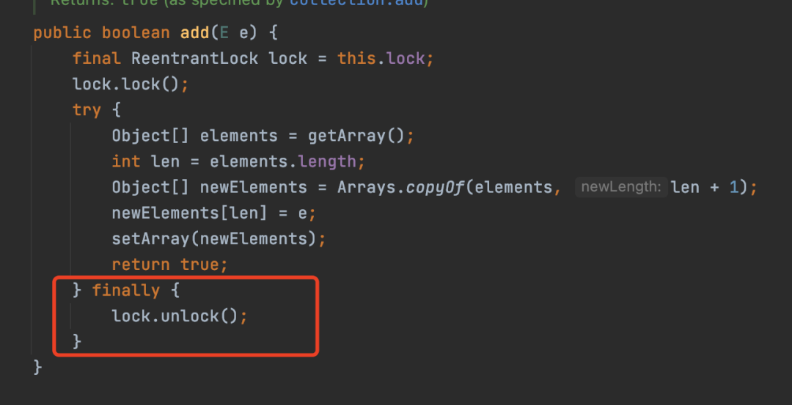
如图所示，就是CopyOnWriteArrayList的add方法的实现，最终是在finally中进行锁的释放。
28、使用线程池代替手动创建线程¶
使用线程池还有以下好处：
- 降低资源消耗。通过重复利用已创建的线程降低线程创建和销毁造成的消耗。
- 提高响应速度。当任务到达时，任务可以不需要的等到线程创建就能立即执行。
- 提高线程的可管理性。线程是稀缺资源，如果无限制的创建，不仅会消耗系统资源，还会降低系统 的稳定性，使用线程池可以进行统一的分配，调优和监控。
所以为了达到更好的利用资源，提高响应速度，就可以使用线程池的方式来代替手动创建线程。
如果对线程池不清楚的同学，可以看一下这篇文章:7000字+24张图带你彻底弄懂线程池
29、线程设置名称¶
在日志打印的时候，日志是可以把线程的名字给打印出来。
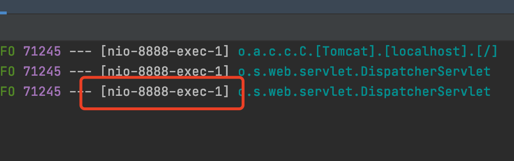
如上图，日志打印出来的就是tom猫的线程。
所以，设置线程的名称可以帮助我们更好的知道代码是通过哪个线程执行的，更容易排查问题。
30、涉及线程间可见性加volatile¶
在RocketMQ源码中有这么一段代码
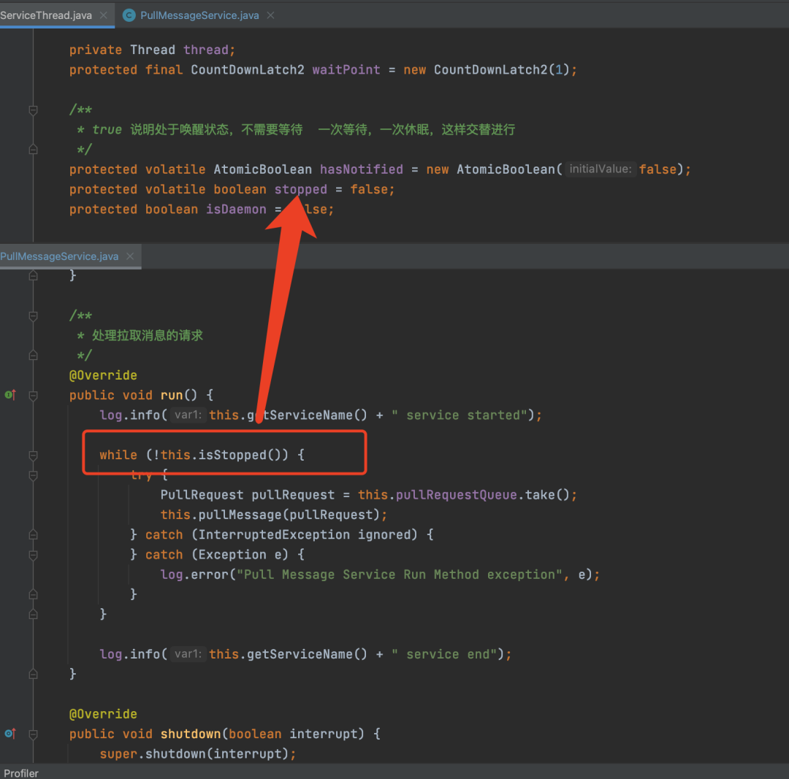
在消费者在从服务端拉取消息的时候，会单独开一个线程，执行while循环，只要stopped状态一直为false，那么就会一直循环下去，线程就一直会运行下去，拉取消息。
当消费者客户端关闭的时候，就会将stopped状态设置为true，告诉拉取消息的线程需要停止了。但是由于并发编程中存在可见性的问题，所以虽然客户端关闭线程将stopped状态设置为true，但是拉取消息的线程可能看不见，不能及时感知到数据的修改，还是认为stopped状态设置为false，那么就还会运行下去。
针对这种可见性的问题，java提供了一个volatile关键字来保证线程间的可见性。
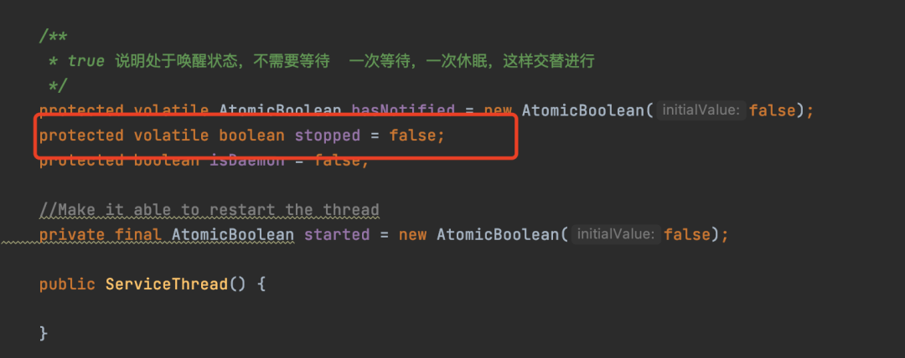
所以，源码中就加了volatile关键字。
加了volatile关键字之后，一旦客户端的线程将stopped状态设置为true时候，拉取消息的线程就能立马知道stopped已经是false了，那么再次执行while条件判断的时候，就不成立，线程就运行结束了，然后退出。
31、考虑线程安全问题¶
在平时开发中，有时需要考虑并发安全的问题。
举个例子来说，一般在调用第三方接口的时候，可能会有一个鉴权的机制，一般会携带一个请求头token参数过去，而token也是调用第三方接口返回的，一般这种token都会有个过期时间，比如24小时。
我们一般会将token缓存到Redis中，设置一个过期时间。向第三方发送请求时，会直接从缓存中查找，但是当从Redis中获取不到token的时候，我们都会重新请求token接口，获取token，然后再设置到缓存中。
整个过程看起来是没什么问题，但是实则隐藏线程安全问题。
假设当出现并发的时候，同时来两个线程AB从缓存查找，发现没有，那么AB此时就会同时调用token获取接口。假设A先获取到token，B后获取到token，但是由于CPU调度问题，线程B虽然后获取到token，但是先往Redis存数据，而线程A后存，覆盖了B请求的token。
这下就会出现大问题，最新的token被覆盖了，那么之后一定时间内token都是无效的，接口就请求不通。
针对这种问题，可以使用double check机制来优化获取token的问题。
所以，在实际中，需要多考虑考虑业务是否有线程安全问题，有集合读写安全问题，那么就用线程安全的集合，业务有安全的问题，那么就可以通过加锁的手段来解决。
32、慎用异步¶
虽然在使用多线程可以帮助我们提高接口的响应速度，但是也会带来很多问题。
事务问题¶
一旦使用了异步，就会导致两个线程不是同一个事务的，导致异常之后无法正常回滚数据。
cpu负载过高¶
之前有个小伙伴遇到需要同时处理几万调数据的需求，每条数据都需要调用很多次接口，为了达到老板期望的时间要求，使用了多线程跑，开了很多线程，此时会发现系统的cpu会飙升
意想不到的异常¶
还是上面的提到的例子，在测试的时候就发现，由于并发量激增，在请求第三方接口的时候，返回了很多错误信息，导致有的数据没有处理成功。
虽然说慎用异步，但不代表不用，如果可以保证事务的问题，或是CPU负载不会高的话，那么还是可以使用的。
33、减小锁的范围¶
减小锁的范围就是给需要加锁的代码加锁，不需要加锁的代码不要加锁。这样就能减少加锁的时间，从而可以较少锁互斥的时间，提高效率。
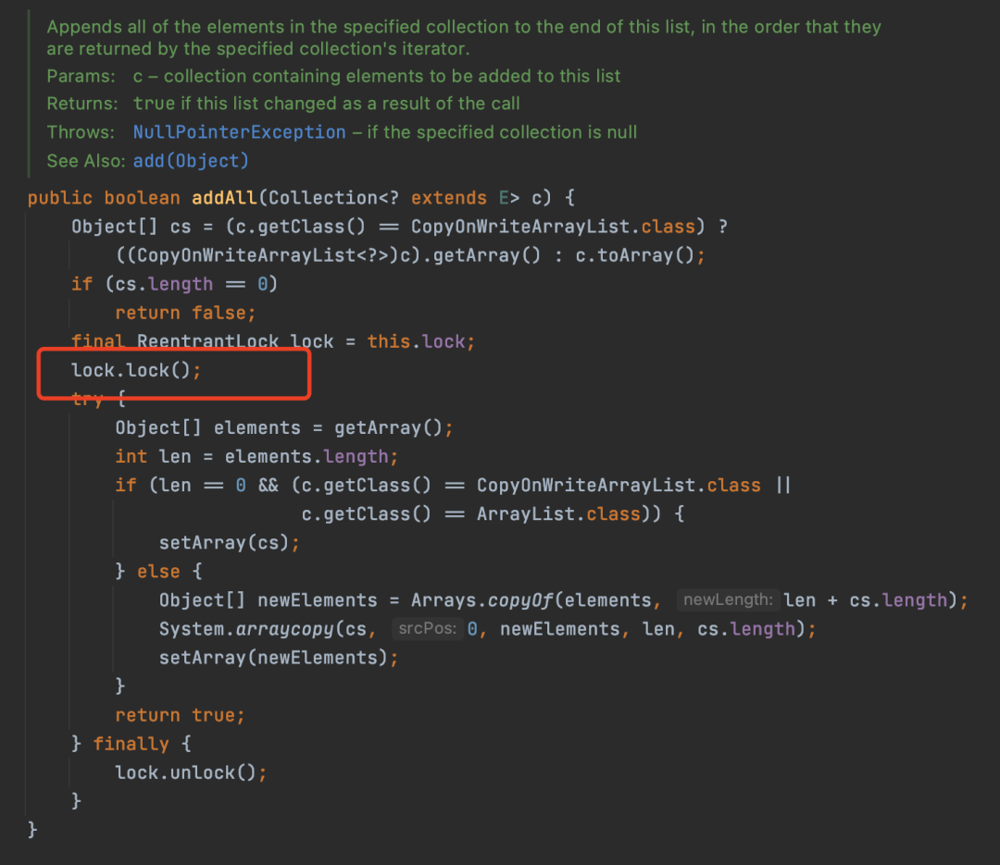
比如CopyOnWriteArrayList的addAll方法的实现，lock.lock(); 代码完全可以放到代码的第一行，但是作者并没有，因为前面判断的代码不会有线程安全的问题，不放到加锁代码中可以减少锁抢占和占有的时间。
34、有类型区分时定义好枚举¶
比如在项目中不同的类型的业务可能需要上传各种各样的附件，此时就可以定义好不同的一个附件的枚举，来区分不同业务的附件。
不要在代码中直接写死，不定义枚举，代码阅读起来非常困难，直接看到数字都是懵逼的。。
35、远程接口调用设置超时时间¶
比如在进行微服务之间进行rpc调用的时候，又或者在调用第三方提供的接口的时候，需要设置超时时间，防止因为各种原因，导致线程”卡死“在那。
我以前就遇到过线上就遇到过这种问题。当时的业务是订阅kafka的消息，然后向第三方上传数据。在某个周末，突然就接到电话，说数据无法上传了，通过排查线上的服务器才发现所有的线程都线程”卡死“了，最后定位到代码才发现原来是没有设置超时时间。
36、集合使用应当指明初始化大小¶
比如在写代码的时候，经常会用到List、Map来临时存储数据，其中最常用的就是ArrayList和HashMap。但是用不好可能也会导致性能的问题。
比如说，在ArrayList中，底层是基于数组来存储的，数组是一旦确定大小是无法再改变容量的。但不断的往ArrayList中存储数据的时候，总有那么一刻会导致数组的容量满了，无法再存储其它元素，此时就需要对数组扩容。所谓的扩容就是新创建一个容量是原来1.5倍的数组，将原有的数据给拷贝到新的数组上，然后用新的数组替代原来的数组。
在扩容的过程中，由于涉及到数组的拷贝，就会导致性能消耗；同时HashMap也会由于扩容的问题，消耗性能。所以在使用这类集合时可以在构造的时候指定集合的容量大小。
37、尽量不要使用BeanUtils来拷贝属性¶
在开发中经常需要对JavaBean进行转换，但是又不想一个一个手动set，比较麻烦，所以一般会使用属性拷贝的一些工具，比如说Spring提供的BeanUtils来拷贝。不得不说，使用BeanUtils来拷贝属性是真的舒服，使用一行代码可以代替几行甚至十几行代码，我也喜欢用。
但是喜欢归喜欢，但是会带来性能问题，因为底层是通过反射来的拷贝属性的，所以尽量不要用BeanUtils来拷贝属性。
比如你可以装个JavaBean转换的插件，帮你自动生成转换代码；又或者可以使用性能更高的MapStruct来进行JavaBean转换，MapStruct底层是通过调用（settter/getter）来实现的，而不是反射来快速执行。
38、使用StringBuilder进行字符串拼接¶
如下代码：
使用 + 拼接字符串的时候，会创建一个StringBuilder，然后将要拼接的字符串追加到StringBuilder，再toString，这样如果多次拼接就会执行很多次的创建StringBuilder，z执行toString的操作。
所以可以手动通过StringBuilder拼接，这样只会创建一次StringBuilder，效率更高。
StringBuilder sb = new StringBuilder();
String str = sb.append("123").append("456").append("789").toString();
39、@Transactional应指定回滚的异常类型¶
平时在写代码的时候需要通过rollbackFor显示指定需要对什么异常回滚，原因在这：
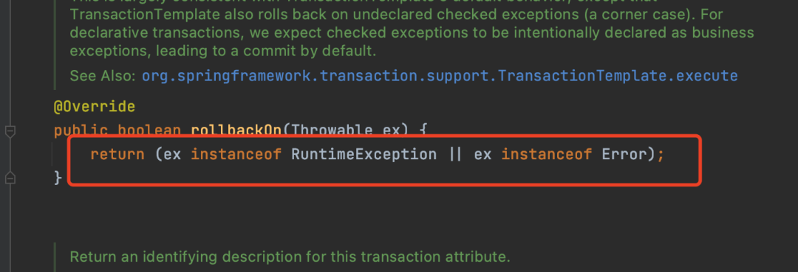
默认是只能回滚RuntimeException和Error异常，所以需要手动指定，比如指定成Expection等。
40、谨慎方法内部调用动态代理的方法¶
如下事务代码
@Service
public class PersonService {
public void update(Person person) {
// 处理
updatePerson(person);
}
@Transactional(rollbackFor = Exception.class)
public void updatePerson(Person person) {
// 处理
}
}
update调用了加了@Transactional注解的updatePerson方法，那么此时updatePerson的事务就是失效。
其实失效的原因不是事务的锅，是由AOP机制决定的，因为事务是基于AOP实现的。AOP是基于对象的代理，当内部方法调用时，走的不是动态代理对象的方法，而是原有对象的方法调用，如此就走不到动态代理的代码，就会失效了。
如果实在需要让动态代理生效，可以注入自己的代理对象
@Service
public class PersonService {
@Autowired
private PersonService personService;
public void update(Person person) {
// 处理
personService.updatePerson(person);
}
@Transactional(rollbackFor = Exception.class)
public void updatePerson(Person person) {
// 处理
}
}
41、需要什么字段select什么字段¶
查询全字段有以下几点坏处：
增加不必要的字段的网络传输¶
比如有些文本的字段，存储的数据非常长，但是本次业务使用不到，但是如果查了就会把这个数据返回给客户端，增加了网络传输的负担
会导致无法使用到覆盖索引¶
比如说，现在有身份证号和姓名做了联合索引，现在只需要根据身份证号查询姓名，如果直接select name 的话，那么在遍历索引的时候，发现要查询的字段在索引中已经存在，那么此时就会直接从索引中将name字段的数据查出来，返回，而不会继续去查找聚簇索引，减少回表的操作。
所以建议是需要使用什么字段查询什么字段。比如mp也支持在构建查询条件的时候，查询某个具体的字段。
42、不循环调用数据库¶
不要在循环中访问数据库，这样会严重影响数据库性能。
比如需要查询一批人员的信息，人员的信息存在基本信息表和扩展表中，错误的代码如下：
public List<PersonVO> selectPersons(List<Long> personIds) {
List<PersonVO> persons = new ArrayList<>(personIds.size());
List<Person> personList = personMapper.selectByIds(personIds);
for (Person person : personList) {
PersonVO vo = new PersonVO();
PersonExt personExt = personExtMapper.selectById(person.getId());
// 组装数据
persons.add(vo);
}
return persons;
}
遍历每个人员的基本信息，去数据库查找。
正确的方法应该先批量查出来，然后转成map：
public List<PersonVO> selectPersons(List<Long> personIds) {
List<PersonVO> persons = new ArrayList<>(personIds.size());
List<Person> personList = personMapper.selectByIds(personIds);
//批量查询，转换成Map
List<PersonExt> personExtList = personExtMapper.selectByIds(person.getId());
Map<String, PersonExt> personExtMap = personExtList.stream().collect(Collectors.toMap(PersonExt::getPersonId, Function.identity()));
for (Person person : personList) {
PersonVO vo = new PersonVO();
//直接从Map中查找
PersonExt personExt = personExtMap.get(person.getId());
// 组装数据
persons.add(vo);
}
return persons;
}
43、用业务代码代替多表join¶
如上面代码所示，原本也可以将两张表根据人员的id进行关联查询。但是不推荐这么，阿里也禁止多表join的操作
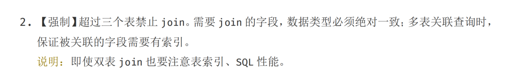
而之所以会禁用，是因为join的效率比较低。
MySQL是使用了嵌套循环的方式来实现关联查询的，也就是for循环会套for循环的意思。用第一张表做外循环，第二张表做内循环，外循环的每一条记录跟内循环中的记录作比较，符合条件的就输出，这种效率肯定低。
44、装上阿里代码检查插件¶
我们平时写代码由于各种因为，比如什么领导啊，项目经理啊，会一直催进度，导致写代码都来不及思考，怎么快怎么来，cv大法上线，虽然有心想写好代码，但是手确不听使唤。所以我建议装一个阿里的代码规范插件，如果有代码不规范，会有提醒，这样就可以知道哪些是可以优化的了。
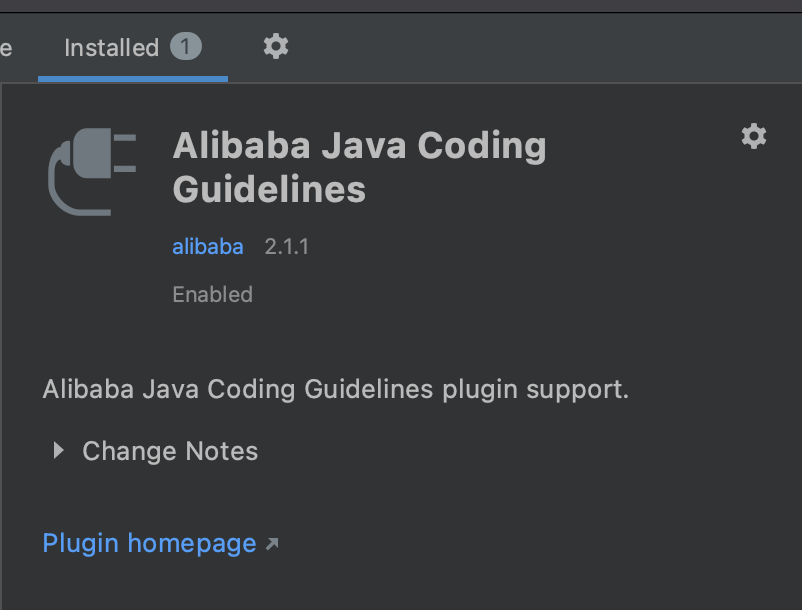
如果你有强迫症，相信我，装了这款插件，你的代码会写的很漂亮。
45、及时跟同事沟通¶
写代码的时候不能闭门造车，及时跟同事沟通，比如刚进入一个新的项目的，对项目工程不熟悉，一些技术方案不了解，如果上来就直接写代码，很有可能就会踩坑。
参考资料：¶
《代码简洁之道》
《阿里巴巴Java开发手册》
如何写出让人抓狂的代码？
程序汪资料链接¶
卧槽！字节跳动《算法中文手册》火了，完整版 PDF 开放下载！